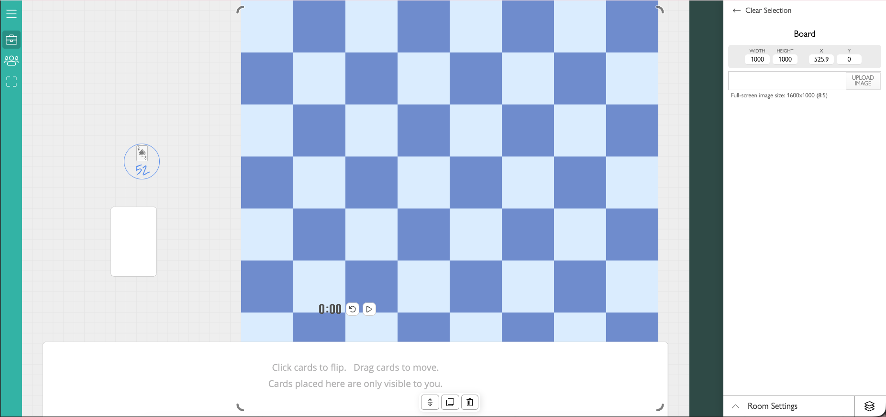

King’s Underworks
A prison-themed race across a 12×12 board to earn reputation points.
- Genre
- Strategy Board Game
- Tools
- Procreate
- Team
- 2-person project (with Jay Chung)
- Role
- Game Designer, Artist, Playtester
overview
King's Underworks is a competitive board game that utilizes a standard 52-card deck of cards and a 12 x 12 board. Two to four players move around the board by drawing cards and landing on tiles that can either increase or decrease their overall score.
The players have been sent to the King’s labor prison for speaking against him and hurting his ego. The warden of the prison offers a deal where the prisoner with the most positive reputation points will have a reduction in their sentence. On the second reduction of their sentence, they are set free and win the game. Players can increase the number of reductions before the game starts if they would like.
game components
- Standard 52-card deck (no jokers)
- The 12 x 12 game board
- Player icons (Coins, tokens, or item of player choice to track progress)
- Score tracker (Paper or digital for addition/subtraction)
design process
1. Initial Ideas/Playtesting and Changes
- At first we were going to make the game using a custom card game website like playingcards.io. Instead we drew the board ourselves because we were able to personalize and customize the game better.
- When creating the board with different points on each tile we just randomly chose numbers and scattered them around the board.
- We decided on the special cards abilities early on but adjusted them through playtesting
- To ensure the board game had a working game system, we conducted playtesting by playing full rounds at different parts of game creation. Through experiencing the game ourselves we were able to adjust tile points, card powers, and special tiles.
- While playing, we noticed that players wouldn’t know where to land after using the shortcuts, so we added in arrows to point them to the next tile to enter or exit on.

what i did
- Co-designed the game's core mechanics, including card-based movement, special card effects, reputation scoring, and multi-round progression.
- Drew five positive tiles, 4 negative tiles, and two shortcut tiles.
- Helped establish the prison escape theme, developed tile concepts, and contributed to the visual direction and layout of the board.
- Organized and assembled the board in Procreate, merging individually designed tiles and coordinating layer exports between devices to create the final board.
- Participated in multiple playtesting sessions, evaluating tile distribution, card interactions, player progression, and scoring. Adjusted board navigation and rules to improve clarity and gameplay balance.
what i learned
- Explored board game design and learned how to create engaging gameplay using physical components, card mechanics, player interactions, and shared resources rather than programming.
- Learned how small changes to movement, scoring, and turn mechanics can significantly affect the overall experience. Playtesting helped us identify how special cards could create unexpected combinations and how positive and negative tiles influenced player progression.
- Learned how to use visual indicators, shortcuts, rewards, and punishments to make rules easier to understand while encouraging players to take risks and make strategic decisions.
- Explored how rewarding previous round winners with a starting point advantage could reinforce player progression and create a sense of momentum across multiple rounds (creating a positive feedback loop).